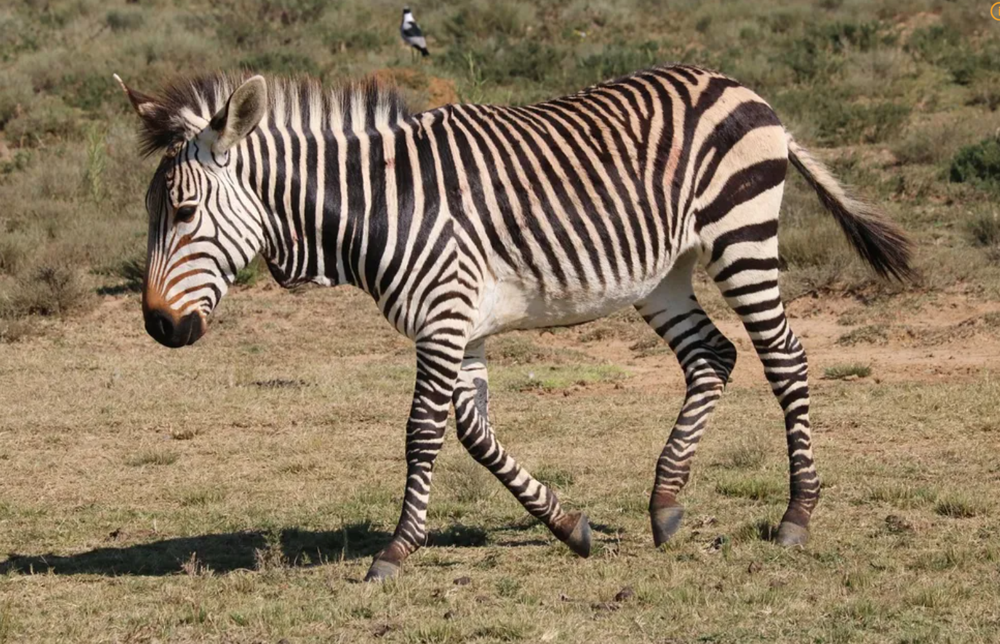

얼룩말은 당나귀와 함께 남아 있는 말의 얼마 안 되는 친척이다. 얼룩말 하면 떠오르는 논쟁이 있다. "얼룩말은 흰 바탕에 검은 줄무늬인가, 검은 바탕에 흰 줄무늬인가?" 이 내용은 애니메이션 마다가스카에도 나오며, 얼룩말 캐릭터 마티는 자신이 흰 바탕에 검은 줄무늬인지 검은 바탕에 흰 줄무늬인지 정체성에 혼란을 느끼는데, 절친인 알렉스는 마티만이 가졌다고 느끼는 정체성이 검은 바탕의 흰 줄무늬라고 말한다.

겉보기에는 검은색 면이 이어지지 않아서 흰 바탕에 검은 무늬인 것 같아 보이기 때문에, 아프리카 원주민들 사이에서 전승되는 전설에 따르면 얼룩말은 원래 백마였는데 초원의 샘을 독차지하는 개코원숭이들과 싸우다가 원숭이 떼가 질러놓은 불에 털이 타서 무늬가 남았다는 이야기가 있다.
또한 사바나얼룩말(Equus quagga), 그레비얼룩말(Equus grevyi), 산얼룩말(Equus zebra) 3종의 얼룩말이 현존하며, 멸종한 종으론 자이언트케이프얼룩말(Equus capensis), 에쿠스 코오비포렌시스(Equus koobiforensis), 사하라얼룩말(Equus mauritanicus), 에쿠스 올도와옌시스(Equus oldowayensis)가 있다.